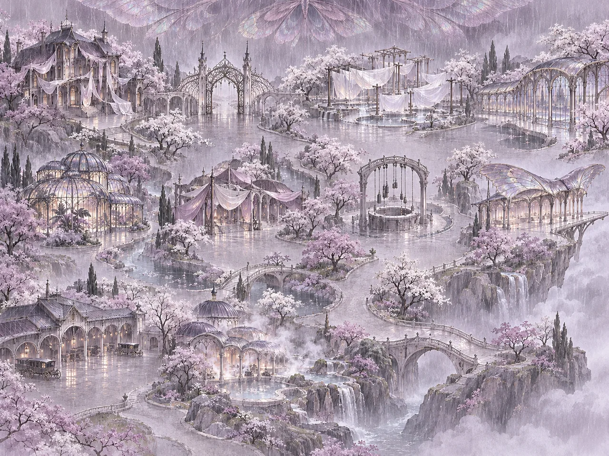

Двор мотыльковых масок
Карты и фигурки ведущего
Игровой комплект
3 игрока · 4 игрока · 5 игроков · 6 игроков · 7 игроков
Карта кампании

Поля боя


Герои


Персонажи ведущего


Противники
 Взрослый дворцовый сторож 3Взрослый дворцовый сторож 4Взрослый дворцовый сторож 5Взрослый дворцовый сторож 1Взрослый дворцовый сторож 2
Взрослый дворцовый сторож 3Взрослый дворцовый сторож 4Взрослый дворцовый сторож 5Взрослый дворцовый сторож 1Взрослый дворцовый сторож 2 Взрослый хранитель прохода 1Взрослый хранитель прохода 4Взрослый хранитель прохода 3Взрослый хранитель прохода 2Взрослый хранитель прохода 5
Взрослый хранитель прохода 1Взрослый хранитель прохода 4Взрослый хранитель прохода 3Взрослый хранитель прохода 2Взрослый хранитель прохода 5 Взрослый сторож каретного двора 1Взрослый сторож каретного двора 2Взрослый сторож каретного двора 3Взрослый сторож каретного двора 5Взрослый сторож каретного двора 4
Взрослый сторож каретного двора 1Взрослый сторож каретного двора 2Взрослый сторож каретного двора 3Взрослый сторож каретного двора 5Взрослый сторож каретного двора 4